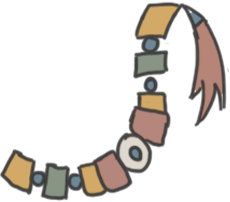
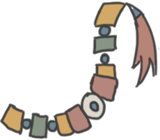

TAYAL CULTURE


 


 【Bed】
【Bed】Simple, but will ensure you get a good night's sleep. 【Male Mushroom- shaped Shell Earrings】
This set of man's earrings is characterised by its mushroom-shaped shell, and the four tassel pendants. The tassels are made of flaxen strings with beads and shells attached: Blue and red glass beads are at the top, a square shell is next, and then a string of alternating white shell beads and black beads follows. Finally, a copper bell is fastened at the end of each bead string. 【"Curtain"】
Curtain with traditional atayal patterns on it! 【Male sleeveless garment】 【Male Headdress】
In traditional Atayal life,
no electricity meant no refrigerators could be used
to preserve foods which would typically spoil.
Atayal people instead used salt to preserve meat
and fish in a method called Tmmyan.
The meat would be cut into small chunks
and covered in salt before a layer was placed in a jar,
with a layer of half-boiled rice added on top.
These layers were repeated until the jar was full,
and sealed for at least one month.
Once opened the meat would remain safe to eat for half a year. 【lubuw tcingan khoni'】
It is used by both men and women, young and old, sometimes as a soloist, or in groups.The whole set of xylophones, with saddles, keys and percussion sticks, is made from a variety of materials such as oilwood, structural wood, saltwood, cypress, bloodwood and maple. Of these, saltwood has the lightest and crispest tone, while oleander has a thicker tone. The xylophone has four scales: 2, 3, 5 and 6, with longer keys for the lower notes and shorter keys for the higher notes.The keys are arranged in the order of scale 2, 3, 5 and 6, with the lower keys placed further down. The keys are played by holding a percussion stick and striking them in the middle of the key in a kneeling position, with a stick in each hand. 【“Basket”】
This basket measures 34 centimeters in length, 29 centimeters in width and 58 centimeters in height. It was used by women for gathering and carrying food or other items. Women's baskets usually only had one strap for carrying on the forehead, while men's baskets usually had two straps for carrying on the shoulders. Thus, the baskets used by the different genders could be distinguished by their straps. 【Medium loom】
The pattern on the two sides of the cloth is that of the father and the middle is that of the mother.The main difference between Atayal textiles and those of other ethnic groups (such as Bunun, Rukai, Paiwan, Amis, etc.) is the simplicity and simplicity of Atayal textiles. The main difference is that the textiles of the Atayal are more simple and simple, not as colourful as those of the other tribes, or as decorative as the glazed beads and embroidery, but this is what makes the Atayal textiles so special and outstanding.